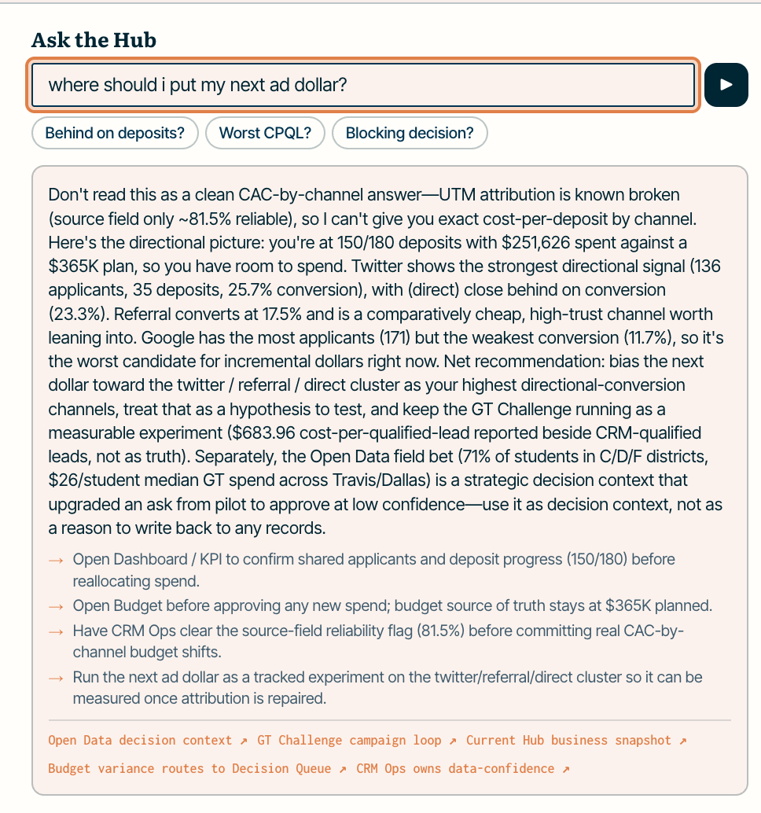

A centralized hub for GT Anywhere's marketing functions, standing on one load-bearing backbone: program-isolated Postgres (row-level security), field-directional CRM↔app sync with idempotent payments and a parity / data-confidence signal, and app-level RBAC. On top sit three deep modules — CRM Ops, Budget, Decision Queue — a Status command center with a checked AI layer, and one live end-to-end campaign, the GT Challenge: a real lead flows ad → quiz → a $100 Stripe test deposit → tracked through to HubSpot. Real code where it matters; every stand-in is labeled.
Two days isn't enough for 13 modules, and trying is the red flag. I built a coherent vertical slice and stubbed the rest deliberately.
| Depth | Modules | Why this call |
|---|---|---|
| backbone | sync · isolation · idempotency · parity | the foundation everything trusts; Phase 2 spends it, never re-solves it |
| deep | CRM Ops · Budget · Decision Queue | backbone-as-product · single-source-of-truth ($365K) · the role-gate + cross-module sink |
| built | Status · Dashboard · Nurture · Summer Camp · GT Challenge | leadership synthesis · dual-source reconcile (counted once) · the live campaign |
| partial | Composable Home | widget library + saved layout per user; browser drag E2E is the remainder |
| stubbed | Grassroots · Content · Admissions · Analytics · Field Events · Library | real, labeled surfaces — not where the engineering judgment lives |
app_rw, NOSUPERUSER / NOBYPASSRLS). An unset program scope returns 0 rows (fail-closed); a cross-program write is rejected by the database, not policed by app code.processed_events); balances are monotonic. The live demo runs a real $100 test deposit through the same handler the webhook uses.| Signal | Where to watch (all live) |
|---|---|
| A payment propagates, no contamination | the live slice + /dev/payments (Live DB) |
| The budget reconciles to the total | /m/budget — 4 workstreams → $365K, >10% variance auto-flags |
| A role is denied the Decision Queue | Operator → /forbidden; /api/decisions → 403 JSON |
| Data-confidence banner on parity drop | /dev/proof + the HubSpot modules |
app_form, engagement = HubSpot, budget = Hub); known-broken surfaced honestly (UTM kept as (not set), GA4 flagged low-confidence).npm run verify (build + lint + tests, no external services) · live: gt-school-hub.vercel.app (Admin / Leader / Operator) · appendices A–E follow.
The live end-to-end slice — the GT Challenge
The brief's worked example, built on the backbone (not forked) and live on the deployed URL. One real lead, all six stages.
| Stage | What happens · what it proves |
|---|---|
| Capture | /ad → quiz (consent-gated) writes a real family + submission + routing to Supabase; UTM attributed source=ad, missing UTM kept as (not set). |
| Assess | deterministic AI grader (rules floor) buckets the child — strong-fit / promising / explore; no "not gifted." qualified drives routing and CPQL. |
| Deposit | $100 real Stripe test charge → propagated through the production handler: payment recorded, enrollment → paid, HubSpot deal queued, routed into the Fall program via RLS. |
| Track | /track/<lead> reads the live DB and advances ad → quiz → routed → paid → synced; nothing staged. |
| Reconcile | the spend rolls into its budget workstream; the total still reconciles to $365K. |
| Report | /m/gt-challenge: spend · qualified · measured CPQL beside other channels; /dev/payments shows the deposit in the live ledger, replay = no-op. |
One play exercises all four signals: propagation without contamination, budget reconciliation, the leader-only gate (a non-leader can't raise the Challenge budget), and parity → the data-confidence banner.
The AI layer — useful, and checkable
/dev/agents; per-claim source + self-eval at /dev/rubrics. Runs deterministically in CI — no model or network needed.
Data & schema — honest by construction
Sources
_standIn + _source.Join keys
utm_campaign — attribution.match_key — dual-source reconciliation (counted once).Model
family (+children) → program (fall · summer, RLS-isolated) → enrollment → payment. Ledgers: processed_events, sync_outbox, decision_event (append-only).
Reproducible & stressed
Verification
npm run verify = build + lint + the test suite, with no external services (deterministic seed + mocked SQL). This is the always-green gate./dev/tests maps each "prove it" scenario to the test that proves it; /dev/test-suite is the full inventory by category.| RLS | row-level security — program isolation enforced by the database. |
| Idempotency key | identifies a repeated event so it's processed once (no double charge). |
| Parity / data-confidence | agreement between Supabase and HubSpot per field; a drop raises the banner. |
| SoT | source of truth — the one system authoritative for a given field. |
| CPQL | cost per qualified lead — measured as spend ÷ counted qualified. |
| PII | personally identifiable information — scanned out of AI output. |
| GUC | the per-transaction session variable that scopes a query to one program. |